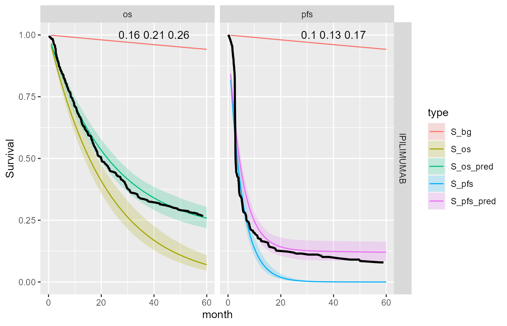

how_to_use.RmdThis is a basic introduction to how to use rstanbmcm to fit Bayesian mixture cure models in Stan.
We will use the Checkmate 067 study data set. The data have already been arranged in to the correct format and saved within the package so we can load it as follows.
data("surv_input_data", package = "rstanbmcm")
Required fields include event times (os, pfs) and censoring indicators (os_event, pfs_event) for both OS and PFS. There should also be a treatment label column (TRTA). Additional patient-level covariates can also be included. At present only age at event (OSage, PFSage) is used.
This looks like this.
head(surv_input_data) #> AAGE OSage PFSage os os_event pfs pfs_event TRTA #> 1 52 57 56 60.024641 0 59.663244 0 NIVOLUMAB+IPILIMUMAB #> 2 77 78 77 19.449692 1 2.628337 1 NIVOLUMAB #> 3 67 67 67 2.069815 1 2.069815 1 IPILIMUMAB #> 4 43 48 47 60.188912 0 59.958932 0 NIVOLUMAB #> 5 71 76 73 64.262834 0 32.295688 1 NIVOLUMAB #> 6 76 78 76 34.891170 1 2.562628 1 IPILIMUMAB #> SEX COUNTRY ACOUNTRY best_overall_resp PFS_rate PFS_H PFS_S OS_rate #> 1 M NLD NETHERLANDS CR 0.005 0.053 0.9483800 0.005 #> 2 F NLD NETHERLANDS PD 0.026 0.286 0.7512626 0.026 #> 3 M NLD NETHERLANDS NE 0.014 0.155 0.8564152 0.014 #> 4 F NLD NETHERLANDS CR 0.001 0.016 0.9841273 0.001 #> 5 M NLD NETHERLANDS PR 0.023 0.275 0.7595721 0.041 #> 6 M NLD NETHERLANDS PD 0.041 0.380 0.6838614 0.041 #> OS_H OS_S csex #> 1 0.058 0.9436499 0.5 #> 2 0.312 0.7319815 -0.5 #> 3 0.155 0.8564152 0.5 #> 4 0.017 0.9831437 -0.5 #> 5 0.380 0.6838614 0.5 #> 6 0.462 0.6300223 0.5
First of all attach all of the libraries we are going to need.
library(purrr) library(reshape2) library(dplyr) library(rstan) library(shinystan) library(dplyr) library(ggplot2) # library(rstanbmcm)
For demonstration purposes we will select a single treatment and fit Exponential distributions to both OS and PFS.
i <- "exp" k <- "exp" j <- "IPILIMUMAB"
To use the Stan engine we set some options to use all-but-one of the available cores and not to over-write pre-complied code.
rstan_options(auto_write = TRUE) options(mc.cores = parallel::detectCores() - 1)
Now we are ready to do the model fitting. There are 3 options to use.
bmcm_joint_stan_string: Constructs the Stan code on-the-fly, meaning it is flexible and can run all distributions combinations. It calls the Stan file directly from R without pre-compiling. This is useful for development.bmcm_joint_stan_file(): Same as above but for pre-written code. Only available for same-distribution OS-PFS pairs.bmcm_joint_stan(): Uses the pre-compiled Stan code. Quicker to run. Like bmcm_joint_stan_file() only for a subset of OS-PFS distribution pairs.An example call to bmcm_joint_stan_string is given below. We recommend using this because it is the most widely-applicable. The other functions can be used for testing.
out <-
bmcm_joint_stan_string(
input_data = surv_input_data,
model_os = i,
model_pfs = k,
tx_name = j,
params_cf =
list(mu_cf_gl = array(-0.8, 1),
sigma_cf_gl = array(2, 1),
sd_cf_os = array(0.5, 1),
sd_cf_pfs = array(0.5, 1))
cf_model = 3,
joint_model = FALSE,
bg_model = 2,
warmup = 100,
iter = 1000,
thin = 10)The first thing to note is that we supply the study data as the first argument input_data. We then define which distributions we want to fit to the OS anf PFS data, followed by the particular treatment subset of data to use from input_data.
The optional arguments params_pfs, params_os are the prior parameters for the PFS, OS distributions respectively. If not provided then the function uses default values. These must be supplied as a list when done so. The two values for each parameter corresponds to the intercept and age effect in the linear equation component of the rate regression. For the parameters that are optional we have to wrap them with array(.,1) because Stan expects an array object even when it is of dimension (1,1).
params_cf is the prior parameters for the cure fraction. The cure fraction parameters here are optional because there are alternative ways of defining its prior i.e. using a Beta distribution or using the same prior for both OS and PFS. This example is for the hierarchical cure fraction model.
cf_model defines whether this is a pooled (1), separate (2) or hierarchical (3) cure fraction model.
joint_model is a logical argument defining whether we model the OS and PFS event times jointly. If joint_model = TRUE then we must also pass the prior parameters using the params_joint argument.
bg_model is the background model. The current options are Exponential distribution (1) or empirical point estimates from WHO life-tables (2). If the former then the function uses a default prior.
Finally, the remaining arguments are passed directly to the Stan engine for the HMC.
There are several very good packages available to view Stan output, including shinystan and coda. Below we give some basic output specific to rstanbmcm.
We can view the raw output from running the Stan model using
res <- extract(stan_exp_exp_IPI)
The available posterior samples are
names(res) #> [1] "beta_os" "beta_pfs" "lp_cf_os" "lp_cf_pfs" #> [5] "lp_os_bg" "lp_pfs_bg" "lambda_os_bg" "lambda_pfs_bg" #> [9] "lp_os" "lambda_os" "lp_pfs" "lambda_pfs" #> [13] "cf_os" "cf_pfs" "mean_os" "mean_pfs" #> [17] "mean_bg" "S_bg" "S_os" "S_pfs" #> [21] "S_os_pred" "S_pfs_pred" "pmean_os" "pmean_pfs" #> [25] "pmean_bg" "pmean_cf_os" "pmean_cf_pfs" "pS_bg" #> [29] "pS_os" "pS_pfs" "S_os_prior" "S_pfs_prior" #> [33] "log_lik" "pbeta_os" "pbeta_pfs" "pbeta_bg" #> [37] "lp__"
p are prior predicted distribution samples.lp_ (except lp__) are the linear predictors used for the Exponential distributions rate parameters lambda_.The function plot_S_joint() takes a list of multiple Stan runs and creates ggplot2 grid object of survival curves for cured, uncured and mixed with 95% credible intervals. In our example we simply create a list of one element.
stan_list <- list("IPILIMUMAB" = stan_exp_exp_IPI) gg <- plot_S_joint(stan_list = stan_list)
In addition, we overlay the Kaplan-Meier curves for the original data using the survival package. Note that this will always be slightly different since this is for the trial case-mix and the posterior survival curves are for the average patient.
library(survival) trta <- "IPILIMUMAB" fit_os <- survfit(Surv(os, os_event) ~ 1, data = filter(surv_input_data, TRTA == trta)) fit_pfs <- survfit(Surv(pfs, pfs_event) ~ 1, data = filter(surv_input_data, TRTA == trta)) km_data <- rbind( data.frame(Tx = trta, event_type = "os", time = fit_os$time, surv = fit_os$surv), data.frame(Tx = trta, event_type = "pfs", time = fit_pfs$time, surv = fit_pfs$surv)) gg + geom_line(aes(x = time, y = surv), data = km_data, lwd = 1, inherit.aes = FALSE) + xlim(0, 60) + ylim(0, 1)
